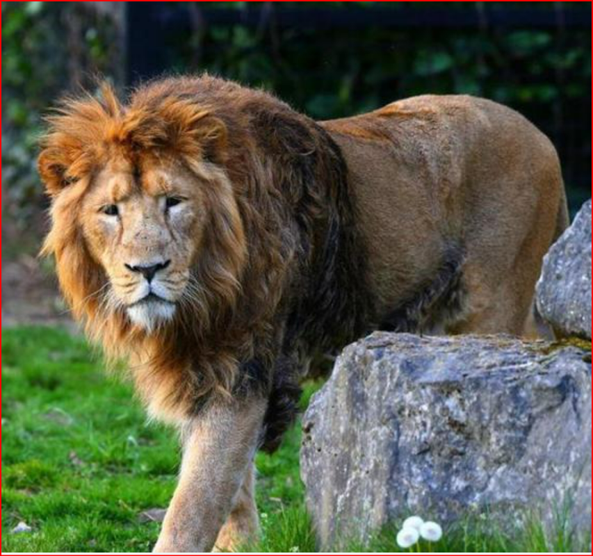

关于“我”——濒危物种
展信佳！
由于自身原因或人类活动或自然灾害的影响，我有着灭绝的危险。于是乎，我成为了濒危物种。
由于自身原因或人类活动或自然灾害的影响，我有着灭绝的危险。于是乎，我成为了濒危物种。
我的孩子面临着极大的危险。
非洲象、印度犀牛、东北虎、华南虎他们的数量不到五百，黑猩猩、北极熊和金雕等也在急剧减少。我们的生态环境逐渐变得恶劣，我们退缩残存在边远的山区、森林、草原、沼泽、荒漠。
我的一些孩子在长期的进化过程中适应了某种特定的栖息环境而产生了特别的习性，他们难以适应变化了的环境，最终落得“不适者被淘汰的结局”。
我们丧失了一些栖息地。当森林被砍伐、湖海被造田、放牧过度，我们的家园便消失了，我们苦苦寻求新家园，奈何处处碰壁，寻求无果。如果可以，可以把家园还给我们吗？
我们的繁殖力在下降。由于农药、鼠药、化肥、煤炭、石油的广泛使用，产生了大量工业分贝和有毒物质，大气、土壤和水体被严重污染了。我们的健康受到损害，许多江河湖泊已不再适应我们的水生野生动物的生存繁殖。
龟鳖肉、蛇肉和田鸡腿的美味、野鸟的动听歌声和艳丽身姿、猎隼活体和藏羚羊绒的国际黑市等，均招来了这些动物的捕杀之祸，致使其野外资源量锐减，不少已处于濒危或极度濒危状态。我们是地球上最孤单的动物。
从未遇见，听闻已是永别。他们，便是灭绝动物。
加勒比僧海豹
由于人类15世纪以来的抹杀，2008年6月6日被宣布从蓝色星球上永远消失。
由于人类15世纪以来的抹杀，2008年6月6日被宣布从蓝色星球上永远消失。
金蟾蜍
最后一次发现于1989年，并于2007年8月被宣布从地球上灭绝，是哥斯达黎加第一个因全球变暖而灭绝的物种。
最后一次发现于1989年，并于2007年8月被宣布从地球上灭绝，是哥斯达黎加第一个因全球变暖而灭绝的物种。
爪哇虎
1983年6月，最后一只雌性爪哇虎于雅加达动物园去世。
1983年6月，最后一只雌性爪哇虎于雅加达动物园去世。
白暨豚
在两千万年前从太平洋进入长江，2004年最后一次。在南京江段发现搁浅的尸体。
在两千万年前从太平洋进入长江，2004年最后一次。在南京江段发现搁浅的尸体。
渡渡鸟
在被人类发现后仅仅200年的时间里，1799年由于人类的捕杀绝灭，是除恐龙之外最著名的灭绝动物之一，英语中有比喻“死得像渡渡鸟一样”，意为死得十分彻底，谚语“重蹈渡渡鸟的覆辙”意为走向灭绝。
在被人类发现后仅仅200年的时间里，1799年由于人类的捕杀绝灭，是除恐龙之外最著名的灭绝动物之一，英语中有比喻“死得像渡渡鸟一样”，意为死得十分彻底，谚语“重蹈渡渡鸟的覆辙”意为走向灭绝。
旅行鸽
1909年，曾经铺天盖地般的旅行鸽只剩最后三只了，它们被喂养在新西纳提动物园中，短短的五十年后，动物园最后的那只被旅行鸽是一只雌性鸽--玛莎，于1914年9月1日死去。
1909年，曾经铺天盖地般的旅行鸽只剩最后三只了，它们被喂养在新西纳提动物园中，短短的五十年后，动物园最后的那只被旅行鸽是一只雌性鸽--玛莎，于1914年9月1日死去。
台湾云豹
1972年，由于人类的过度捕杀与栖息地被破坏，再未见踪迹，2013年4月，台湾学者宣布其灭绝。
1972年，由于人类的过度捕杀与栖息地被破坏，再未见踪迹，2013年4月，台湾学者宣布其灭绝。
中国犀牛
由于犀角的经济和药用价值极高，受到人类的大肆猎杀，并于1922年在中国彻底消失。
由于犀角的经济和药用价值极高，受到人类的大肆猎杀，并于1922年在中国彻底消失。

亚洲狮
1757年印度沦为英国殖民地后，殖民者将猎杀亚洲狮视为一种娱乐活动。1908年，亚洲狮只剩下最后13只，人们把它们全部捕捉进行人工饲养,并被宣布野外灭绝
1757年印度沦为英国殖民地后，殖民者将猎杀亚洲狮视为一种娱乐活动。1908年，亚洲狮只剩下最后13只，人们把它们全部捕捉进行人工饲养,并被宣布野外灭绝
共享家园（人与自然和谐相处）
动物的今天也许就是人类的明天。我们不仅要热爱自己的生命，也要关爱动物的生命。我们少喝一碗鱼翅汤，就能多救活一条鲨鱼;少看几场海豚表演，就能使海豚减轻不少压力。请记住，
这个蔚蓝色的星球不单单属于人类。
枪响之后，没有赢家。地球已受到极其严重的破坏，如果不采取紧急且更大力度的行动来保护环境，地球的生态系统和人类的可持续发展事业将日益受到更严重的威胁。
无助的生命哭诉着期待，
糊涂的商人只顾着气派。
只愿生命自由起舞，
莫因人类私欲入腹。
-

消息
-

官方客服
-

反馈
-

举报
-

回顶部